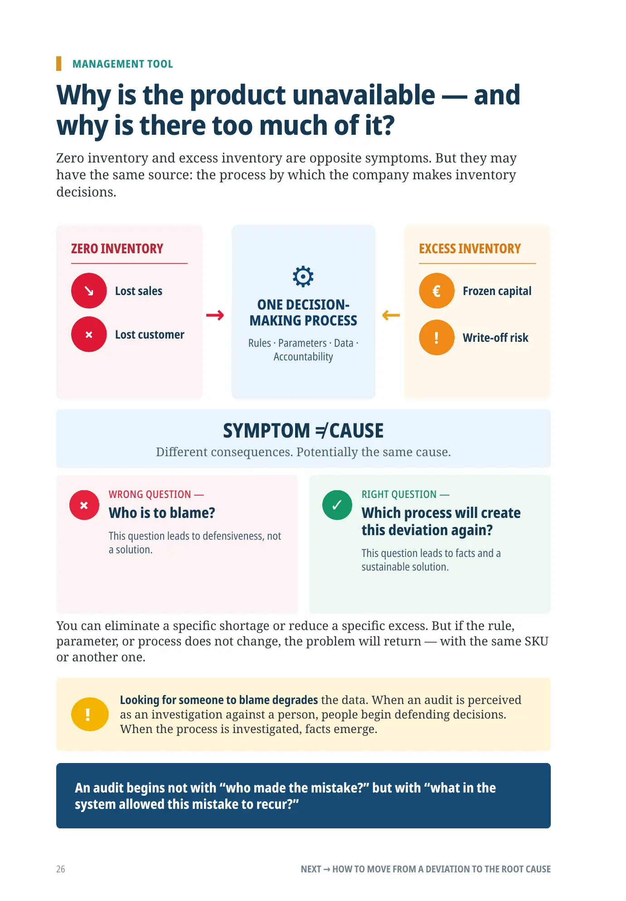
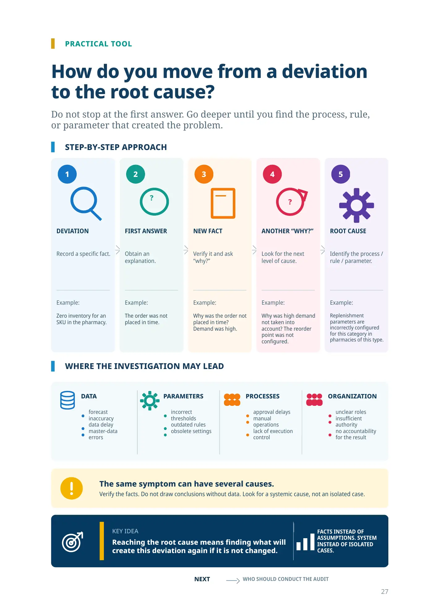
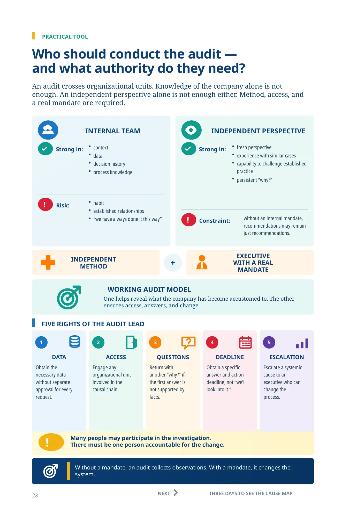
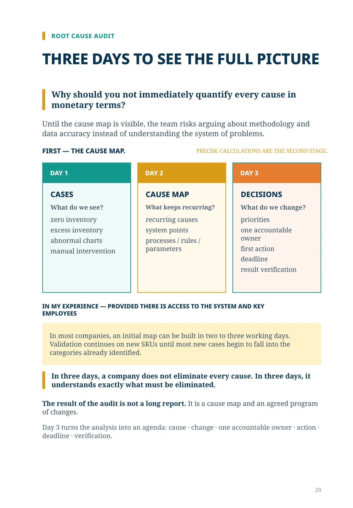
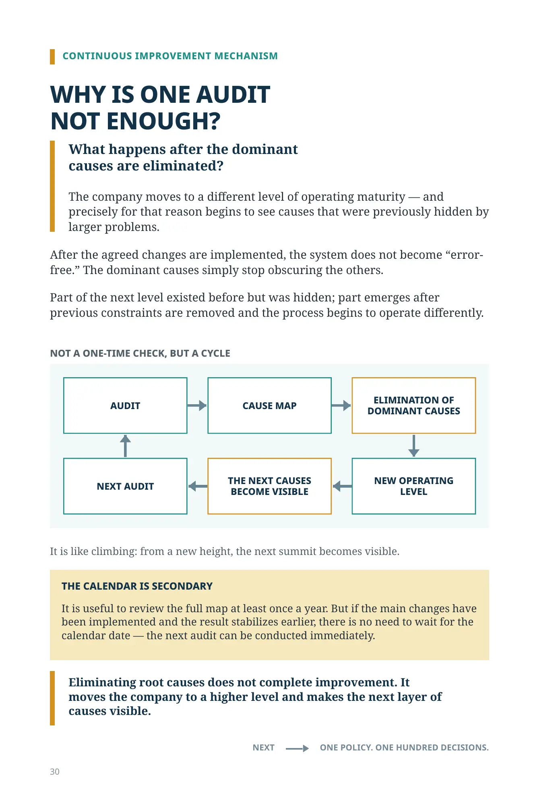
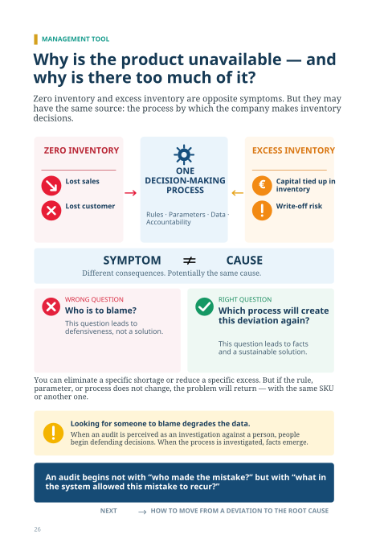
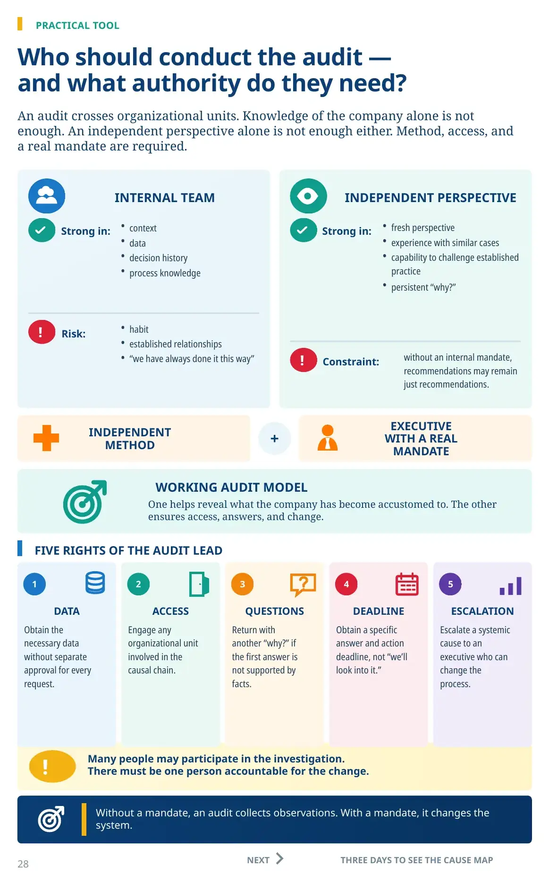
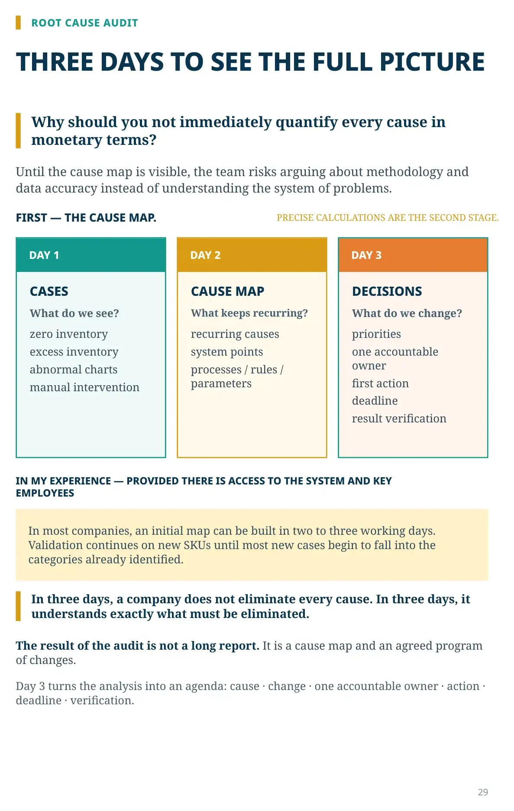
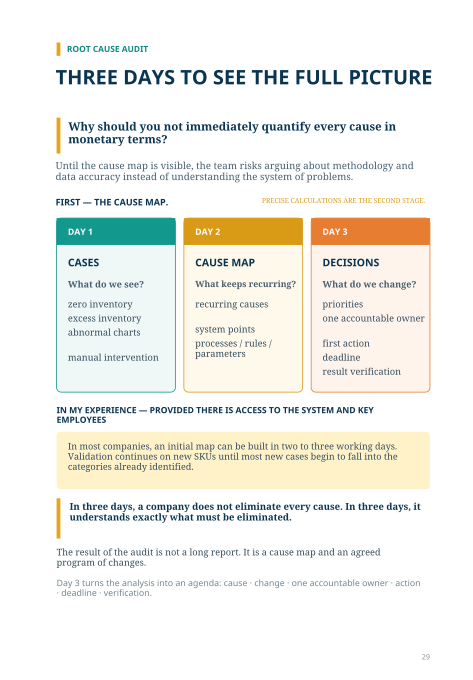
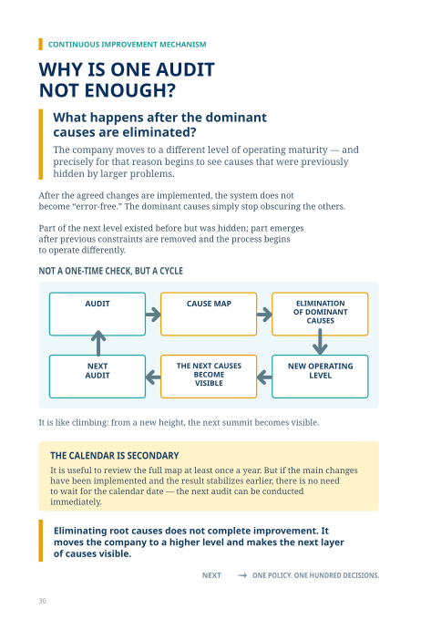

Inventory Root Cause Audit

PRACTICAL TOOL
How do you move from a deviation to the root cause?
Do not stop at the first answer. Go deeper until you find the process, rule, or parameter that created the problem.
STEP-BY-STEP APPROACH
DEVIATION
Record a specific fact.
Example:
Zero inventory for an SKU in the pharmacy.
FIRST ANSWER
Obtain an explanation.
Example:
The order was not placed in time.
NEW FACT
Verify it and ask “why?”
Example:
Why was the order not placed in time? Demand was high.
ANOTHER “WHY?”
Look for the next level of cause.
Example:
Why was high demand not taken into account? The reorder point was not configured.
ROOT CAUSE
Identify the process / rule / parameter.
Example:
Replenishment parameters are incorrectly configured for this category in pharmacies of this type.
WHERE THE INVESTIGATION MAY LEAD
DATA
forecast inaccuracy
data delay
master-data errors
PARAMETERS
incorrect thresholds
outdated rules
obsolete settings
PROCESSES
approval delays
manual operations
lack of execution control
ORGANIZATION
unclear roles
insufficient authority
no accountability for the result
The same symptom can have several causes.
Verify the facts. Do not draw conclusions without data. Look for a systemic cause, not an isolated case.
KEY IDEA
Reaching the root cause means finding what will create this deviation again if it is not changed.
FACTS INSTEAD OF ASSUMPTIONS. SYSTEM INSTEAD OF ISOLATED CASES.
NEXT
WHO SHOULD CONDUCT THE AUDIT

PRACTICAL TOOL
Who should conduct the audit —
and what authority do they need?
An audit crosses organizational units. Knowledge of the company alone is not
enough. An independent perspective alone is not enough either. Method, access, and
a real mandate are required.
INTERNAL TEAM
Strong in:
context
data
decision history
process knowledge
Risk:
habit
established relationships
“we have always done it this way”
INDEPENDENT PERSPECTIVE
Strong in:
fresh perspective
experience with similar cases
capability to challenge established practice
persistent “why?”
Constraint:
without an internal mandate, recommendations may remain just recommendations.
INDEPENDENT
METHOD
+
EXECUTIVE
WITH A REAL
MANDATE
WORKING AUDIT MODEL
One helps reveal what the company has become accustomed to. The other ensures access, answers, and change.
FIVE RIGHTS OF THE AUDIT LEAD
DATA
Obtain the necessary data without separate approval for every request.
ACCESS
Engage any organizational unit involved in the causal chain.
QUESTIONS
Return with another “why?” if the first answer is not supported by facts.
DEADLINE
Obtain a specific answer and action deadline, not “we’ll look into it.”
ESCALATION
Escalate a systemic cause to an executive who can change the process.
Many people may participate in the investigation.
There must be one person accountable for the change.
Without a mandate, an audit collects observations. With a mandate, it changes the
system.
NEXT
THREE DAYS TO SEE THE CAUSE MAP


THREE DAYS TO SEE THE FULL PICTURE
Why should you not immediately quantify every cause in monetary terms?
Until the cause map is visible, the team risks arguing about methodology and data accuracy instead of understanding the system of problems.
DAY 1
CASES
What do we see?
zero inventory
excess inventory
abnormal charts
manual intervention
DAY 2
CAUSE MAP
What keeps recurring?
recurring causes
system points
processes / rules / parameters
DAY 3
DECISIONS
What do we change?
priorities
one accountable owner
first action
deadline
result verification
IN MY EXPERIENCE — PROVIDED THERE IS ACCESS TO THE SYSTEM AND KEY
EMPLOYEES
In most companies, an initial map can be built in two to three working days. Validation continues on new SKUs until most new cases begin to fall into the categories already identified.
In three days, a company does not eliminate every cause. In three days, it understands exactly what must be eliminated.
The result of the audit is not a long report. It is a cause map and an agreed program of changes.
Day 3 turns the analysis into an agenda: cause · change · one accountable owner · action · deadline · verification.

WHY IS ONE AUDIT
NOT ENOUGH?
What happens after the dominant
causes are eliminated?
The company moves to a different level of operating maturity — and precisely for that reason begins to see causes that were previously hidden by larger problems.
After the agreed changes are implemented, the system does not become “error-free.” The dominant causes simply stop obscuring the others.
Part of the next level existed before but was hidden; part emerges after previous constraints are removed and the process begins to operate differently.
NOT A ONE-TIME CHECK, BUT A CYCLE
AUDIT
CAUSE MAP
ELIMINATION OF DOMINANT CAUSES
NEW OPERATING LEVEL
THE NEXT CAUSES BECOME VISIBLE
NEXT AUDIT
It is like climbing: from a new height, the next summit becomes visible.
THE CALENDAR IS SECONDARY
It is useful to review the full map at least once a year. But if the main changes have been implemented and the result stabilizes earlier, there is no need to wait for the calendar date — the next audit can be conducted immediately.
Eliminating root causes does not complete improvement. It moves the company to a higher level and makes the next layer of causes visible.
NEXT ONE POLICY. ONE HUNDRED DECISIONS.